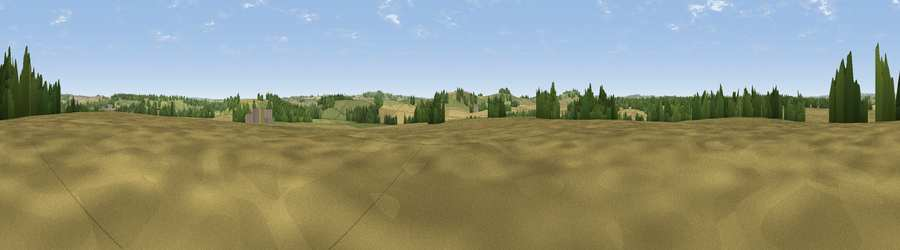

Viewpoint near Goodworth Clatford
#37455 in England · top 70% of its area beats it · near Goodworth ClatfordWhere it is
The exact computed spot (SU 35231 40188). Click the marker for map links.
The view, rendered

A 360° render of this exact spot computed from the terrain model, tree cover and land cover — summer colours, afternoon light, calibrated against photographs of famous viewpoints. Real trees, hedges and buildings will differ in detail.
The panorama
Grey silhouette: terrain skyline in each direction (720 bearings, Earth curvature and refraction included). Dashed green: skyline with trees (+15 m) and buildings (+8 m) as obstacles. Blue strip: how far the ground is visible on each bearing.
Where the view opens
Wedge length = distance to the farthest visible ground on that bearing (vegetation-aware). Rings at 10, 25 and 50 km.
What fills the view
51% cropland · 32% grassland · 16% woodland · 2% built-up
Angular shares of the visible panorama (visual magnitude), not map area. Landscape diversity 0.46 (0–1 Shannon).
Key numbers
More beautiful places nearby
The staircase of upgrades: each row has a higher view potential than everything closer. Driving times are estimates from straight-line distance, calibrated against real road routing — check an actual route before setting out.
| Place | Direction | Drive | Score |
|---|---|---|---|
| Viewpoint near Longstock | SSW · 3 km | ~7 min | 53.1 |
| Viewpoint near Nether Wallop | SW · 4 km | ~9 min | 54.3 |
| Viewpoint near Stockbridge | SSE · 6 km | ~12 min | 63.3 |
| Viewpoint near Stockbridge | SSE · 6 km | ~12 min | 64.3 |
| Viewpoint near Sparsholt | SSE · 12 km | ~23 min | 66.9 |
| Viewpoint near Bulford | W · 16 km | ~28 min | 70.3 |
| Beacon Hill | NNE · 20 km | ~34 min | 76.7 |
| Martinsell viewpoint | NW · 29 km | ~46 min | 77.3 |
51.15987, -1.49758 · source: osm peak · position refined by local search. Computed location — check access rights before visiting.